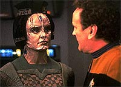
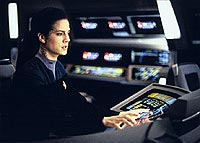
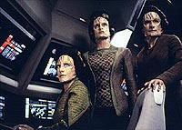
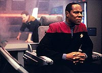
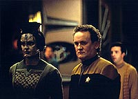

MANCHETE
DO EPISDIO
Profecia
convence Sisko da natureza
sobrenatural de sua misso em Bajor
Episdio
anterior | Prximo
episdio
Sinopse:
Data Estelar: 48543.2.
Duas cientistas Cardassianas, Ulani
Belor e Gilora Rejal, esto vindo a bordo de DS9 (no mbito do
novo tratado de paz entre Bajor e Cardssia) para ajudar a
estabelecer um rel de comunicao prximo abertura da
Fenda Espacial no quadrante Gama, permitindo comunicaes atravs
da passagem entre os quadrantes pela primeira vez. Quark est
desapontado que o Kanar (bebida tpica Cardassiana) que ele tinha
dos tempos da ocupao estragou.

O
vedek Yarka acompanhado por Kira vem ver o comandante Sisko. O
religioso diz que a terceira profecia de Trakor est para se
cumprir. Parafraseando: "Quando o rio acordar, dirigido uma
vez mais para o lado de Janir, trs vboras retornaro para o
seu ninho no cu... Quando as vboras tentarem perscrutar atravs
dos portais do templo, uma espada de estrelas ir aparecer nos cus.
O templo ir se incendiar e os seus portais se abriro".
A parte do rio acaba de se confirmar em Bajor e o religioso
acredita que as cientistas so as vboras e que o seu
experimento levar destruio do Templo Celestial, a Fenda
Espacial. Sisko no acredita muito na histria (so duas
cientistas e no trs, para comeo de conversa) e diz ao Vedek
que no vai adiar o experimento. Yarka se retira e Sisko diz
major que quer que Odo apure tudo que puder sobre o Vedek (tanto a
Assemblia dos Vedeks quanto a kai Winn no deram muita bola
para ele, por isto ele recorreu a Sisko, como Emissrio dos
Profetas).
Sisko e Kira vo receber as cientistas. Em uma reunio a seguir
fica decidido que algumas modificaes sero necessrias no
sistema de transmisso de sinais de DS9 e que a Defiant ir
levar o rel para o outro lado da fenda e os testes sero
iniciados. Ao final do encontro, Ulani diz que uma outra colega,
Dejar, tambm est para chegar. Quando a cientista se retira,
Kira, com uma expresso consternada, diz: "trs vboras,
exatamente como na profecia".

Odo
descobre que Yarka no mais um vedek, tendo perdido sua posio
porque liderou protesto contra o tratado de paz entre Cardssia e
Bajor, dois meses atrs. O comissrio e Sisko suspeitam que o
religioso est usando a profecia para atacar o tratado. Odo tambm
diz que o desejo de Sisko de se distanciar da sua posio de
Emissrio pode o estar fazendo descartar a profecia com muita
facilidade. O que faz Sisko pensar.
Yarka diz a Kira que ela no pode mais manter a sua f e o seu
trabalho separados e que os Profetas a escolheram para a ajudar o
seu Emissrio a tomar a melhor deciso para Bajor. Dejar chega e
se encontra com Gilora, Ulani, Dax e O'Brien no Quark's. Gilora e
O'Brien tm uma dificuldade inicial para preparar a estao
para o experimento.
A bordo da Defiant, os ltimos preparativos so tomados para o
posicionamento do rel. Dax detecta um cometa, com uma alta
concentrao de siltio. Ela verifica que ele vai passar prximo
abertura da fenda, mas no ir atrapalhar o experimento. Kira
diz sem pensar: "Uma espada de estrelas". Sisko
discretamente chama a major para uma conversa privada em sua
cabine.
Sisko diz que a profecia no tem lugar na ponte da Defiant,
especialmente com as Cardassianas presentes. Kira concorda, mas
diz que acredita na profecia e que Sisko o Emissrio e tem uma
deciso a tomar. A major chega mesmo a oferecer uma interpretao
racional dos fatos envolvendo a natureza no-linear dos Profetas,
mas sisko no consegue se ver como parte da f Bajoriana e a
conversa acaba quando Dax o chama para avisar do lanamento do
rel.
Em DS9, Gilora e o chefe continuam a trabalhar na adaptao de
um mdulo de comunicao Cardassiano (gmeo daquele agora
instalado no rel) nos sistemas da estao. Gilora continua
querendo fazer tudo sozinha, apesar do chefe repetir que conhece a
estao como ningum. A Cardassiana diz que os homens
Cardassianos no tm jeito para cincia e engenharia, mas
O'Brien mostra ser bastante capaz continuando a instalao sob
os olhares agora interessados de Gilora.
Na Defiant, aps ser cumprido o prazo dado por O'Brien, Dax tenta
repetidamente realizar uma transmisso atravs da fenda para
DS9, sem sucesso. At que algo d errado e a fenda se abre,
produzindo uma perturbao gravitacional que muda a trajetria
do cometa, que agora ruma direto para a entrada da Fenda Espacial.
Se o siltio interagir com o interior da fenda, ir produzir uma
reao em cadeia que deve fech-la para sempre.

A
Defiant volta estao para que Sisko e cia. possam avaliar a
situao. O'Brien diz que consegue modificar os feisers da
Defiant de forma a produzir um feixe largo o bastante para
vaporizar o cometa por igual e no produzir a sua fragmentao
(o que pioraria muito a presente situao, o que tambm no
recomenda o uso de raios tratores). Enquanto trabalhando na
Defiant sozinhos, Gilora comea a flertar descaradamente com o
chefe O'Brien. Ela diz que o chefe parecia estar interessado, como
costume entre os Cardassianos, pelo nvel de irritabilidade que
ele demonstrou com relao a ela desde o incio. Ambos ento
entendem que houve um caso de "mal-entendido
intercultural" e Gilora se retira completamente sem graa
(especialmente por saber agora que o chefe tem mulher e uma
filha).
Dax entra no escritrio de Sisko, que est lendo profecias
Bajorianas relacionadas ao Emissrio e ele identifica algumas que
"com uma certa interpretao" j at se realizaram.
Sisko est cada vez mais preocupado, mas quando Dax diz que ele no
pode deixar que tais profecias tomem a deciso por ele, Sisko
desliga o terminal e volta para a Defiant. Os feisers disparam.
Mas eles disparam uma rajada convencional que fragmenta o cometa
em trs partes que continuam o seu caminho, rumo fenda. O
sistema de armas da Defiant fica totalmente inoperante.
O'Brien checa o seu trabalho e se lamenta por aparentemente ter
cometido um erro elementar. Mas Gilora (sob os protestos amistosos
de Ulani) diz que no foi culpa do chefe e que Dejar (na
realidade uma agente da Ordem Obsidiana) sabotou os feisers, com o
propsito de impedir o sucesso da misso, uma vez que a Ordem
contrria ao tratado em primeiro lugar. Dejar levada para uma
cela para posterior confirmao.
Sisko e Kira tomam um mdulo auxiliar da Defiant e tencionam u-lo
para produzir um campo subespacial ao redor dos fragmentos, para
gui-los em seu curso e impedir que o siltio possa interagir
com a Fenda Espacial (a Defiant muito grande para tal manobra).
Dax toma o comando da Defiant e os espera do outro lado, no
quadrante Alfa. O plano funciona, apesar de ter ocorrido algum
vazamento do mineral dentro da fenda, sem maiores danos. O'Brien
fica surpreso ao comear a captar o sinal de teste do rel
--aparentemente o siltio interagindo com o interior da fenda
produziu um filamento subespacial que funciona como um portador de
onda, finalmente permitindo a comunicao atravs dela.
Quando isto acontece Kira diz que de fato a profecia se realizou e
agora ela e Sisko trazem uma nova interpretao. As "trs
vboras" so na realidade os trs fragmentos do cometa. E
o "templo se incendiou" atravs da reao do siltio,
"para nunca mais se fechar", permitindo ento a
comunicao atravs da fenda. "E tudo isto porque o Emissrio
usou a 'espada de estrelas'", diz Kira em deslumbramento.
"E Trakor viu tudo isso, trs mil anos atrs", conclui
Sisko.
Mais tarde O'Brien leva Gilora para a comporta de atracao e
ela diz que ficar bem com relao ao "caso Dejar" e
que Keiko uma mulher de sorte. Yarka se desculpa com Sisko,
dizendo que a sua posio poltica prejudicou a sua interpretao
da profecia. Diz tambm que a quarta profecia de Trakor tambm
vai se realizar e que ela diz: "O Emissrio ir enfrentar
um julgamento de fogo e ter que escolher entre...".
Comentrios:
Aqui temos um grande "vencedor" que utiliza, com grande
competncia, diversas caractersticas nicas da srie DS9
dentro do franchise de Jornada nas Estrelas: os Profetas,
Sisko como o seu Emissrio e a f Bajoriana (servida em
microcosmo por Kira). O episdio traz uma nova luz para
relacionamento entre Kira e Sisko antes e depois deste ponto e faz
Sisko aceitar o ttulo de "Emissrio" (ainda que de
forma desconfortvel e incerta) pela primeira vez. Um desnecessrio
flerte entre Gilora e O'Brien (e alguns outros detalhes, como a
natureza intrinsecamente tcnica da histria) atrapalham, mas no
tiram o brilho do segmento. Mais detalhes, sem precisar "usar
a espada de estrelas para incendiar o templo celestial" no
processo, nas linhas abaixo.
Tivemos que esperar 61 episdios para que Sisko encarasse o seu
papel de "Emissrio dos Profetas" e que Kira mostrasse
claramente os seus sentimentos por trabalhar com um cone
religioso do seu povo, mas as respostas obtidas foram to
satisfatrias e consistentes com o que conhecemos dos dois
personagens que a espera, se no se faz justificada, ao menos se
faz perdoada.
O roteiro faz uma opo interessante de comear tendo a realizao
da profecia como algo inconcebvel, colocando tanto Kira quanto
Sisko nesta posio inicialmente. medida que chegamos a cada
final de ato do episdio, mais e mais evidncias se acumulam no
sentido de que a Profecia ir se "realizar". E o
comandante e a major vm reavaliar as suas posies, por
diferentes motivos e percorrendo diferentes caminhos. O roteiro
utiliza tambm os outros personagens de forma completamente
consistente com as suas personalidades (cortesia do "mestre
da caracterizao" Ren Echevarria, em uma participao
no-creditada).
Sisko comea a pensar, quando Odo (o observador da condio
humana da srie) faz o comentrio absolutamente verdadeiro de
"que todo indivduo tem uma agenda pessoal que influencia em
suas atitudes, mesmo que no esteja ciente disto". Depois,
na conversa com Kira a ss, em que a f da major nele se faz
clara e presente pela primeira vez, deixando-o quase sufocado. Em
seguida, quando ele prprio comea a pesquisar sobre profecias
envolvendo o emissrio, vem Dax (a voz da cincia da srie)
tentando faz-lo esquecer a profecia, mas ele j no est mais
to certo. Ao final "algo" acontece durante a
"pilotagem dos fragmentos" que o faz repensar a sua posio
como o Emissrio.

Falando
com Yarka e depois com Sisko na cabine, Kira mostra o quanto foi
difcil trabalhar para o comandante todo esse tempo, lidando com
ele de uma maneira absolutamente secular. Quando ela admite isso
para Sisko, a reao do comandante indescritvel, receando
at imaginar a provao pela qual ela passou todo esse tempo.
Em seguida, Kira tenta oferecer uma explicao totalmente cientfica
para sustentar a veracidade da profecia, para tentar fazer com que
Sisko faa a "coisa certa", apesar de em seu corao
no acreditar em tal explicao. O que excruciante de se
assistir. O final da cena em Sisko nega todas as crenas de Kira,
incluindo a dele como Emissrio, drama da melhor qualidade,
drama do tipo que um mero comentrio nunca far justia, tem
que ser visto para ser totalmente apreciado.
O episdio funciona (e a reside a sua beleza) no porque a
"profecia se realizou", mas porque Kira e Sisko
acreditaram que ela se realizou. A profecia extremamente vaga e
tosca, deixando claramente aberta a sua interpretao. Sua
"realizao" ou no passa a ser uma "questo de
f", como deve ser sempre em uma histria envolvendo questes
espirituais. Dax e O'Brien com certeza tm uma histria bem
diferente para contar sobre a tal misso.
O final, quando Yarka admite o seu erro de interpretao (e os
motivos envolvidos em tal erro), fortalece a seriedade da religio
Bajoriana e d uma diferente conotao a sua expulso da
Assemblia dos Vedeks (especialmente por que Winn a kai de
Bajor e foi ela quem negociou o tratado entre Bajor e Cardssia).
Em um episdio que traz o teste de um aparato tecnolgico e com
trs cientistas Cardassianas, alm de O'Brien e Dax com vrias
falas, seria inevitvel um grande uso de
"tecnobaboseira". Ainda que claramente excessiva, tal
"tecnobaboseira" no foi fatal para o episdio, pois no
foi usada como uma maneira fcil de produzir e eliminar
"Falsa Encrenca"(TM).
Os pontos crticos so o "minrio mgico" do cometa
que pode "reagir" com a Fenda Espacial e o fato da tal
"inverso da Fenda Espacial" causar uma mudana na
trajetria do cometa. Ambos so estabelecidos e se mantm
constantes em suas caractersticas at o final, onde so
plenamente justificados pela Profecia (ainda que permaneam
incertos dentro da cincia conhecida).
O mdulo auxiliar faz um papel que a Defiant no poderia fazer,
devido proximidade dos fragmentos e a necessidade de um vo
delicado e de preciso. A utilizao de um "campo
subespacial" (elemento fundamental de qualquer vo em
velocidade de dobra) a de um mero "campo de fora"
para guiar os fragmentos e impedir a interao da fenda com o
tal "mineral".
(Um uso muito mais abstrato de um campo deste tipo --que nem
capturado de forma clara pelos efeitos visuais-- se d no episdio
"All Good Things...", ltimo da Nova Gerao,
para tentar fechar uma "erupo de antitempo".)
A dvida final se o tal campo subespacial afetaria
(especialmente dentro da Fenda Espacial) o princpio da inrcia
ou no (o episdio assume que no --ver tambm "Emissary",
onde um campo similar utilizado para deslocar a estao at
a boca da Fenda Espacial, reduzindo naquela ocasio a sua massa
inercial).

Colocando
de lado tais elementos de trama (alguns duvidosos, outros nem
tanto), o nico real problema que tivemos entre os personagens
foi aquele devido ao "mal-entendido intercultural" entre
O'Brien e Gilora. A idia de que so as fmeas Cardassianas que
dominam as cincias e que tal raa demonstra interesse entre si
atravs de contnuas discusses reflete falta de imaginao
do roteiro, para dizer o mnimo. O fato de Gilora delatar Dejar
caiu bem com a sua personalidade, como apresentada no episdio.
Les Landau parece realmente merecer o ttulo de "diretor de
atores de Jornada", arrancando uma boa performance de
cada ator envolvido (exceto Scoggins, claro). Os efeitos
visuais do segmento foram claramente erodidos pelo passar do
tempo, especialmente aqueles envolvendo o cometa, que parece que
nunca foram interessantes em primeiro lugar. Apesar disso, a viso
sob um ponto de vista externo de Kira dentro da cabine do mdulo
foi bem interessante.
Brooks e Visitor ficaram com o destaque absoluto. A j citada
cena na cabine de Sisko uma das mais bem atuadas de toda a srie,
mostrando do que os dois so capazes quando tm material
altura para trabalhar. Os demais atores regulares tambm foram
bem, sem excees.
Tracy Scoggins foi um claro elo fraco, cheia de caras e bocas. Em
especial a reao de sua personagem quando O'Brien revela ser
casado simplesmente ridcula. Wendy Robie foi extremamente
jovial e simptica, uma interessante Cardassiana, ampliando o
espectro de caracterizaes de sua raa no franchise. Erick
Avari trouxe um personagem com grande determinao, mas sem cair
no clich do fanatismo, ficando com o destaque da semana dentre
os atores convidados. Jessica Hendra, ainda que no no nvel de
Tricia O'Neil em "Defiant",
fez tambm um bom servio como agente da Ordem Obsidiana (alis,
cuja revelao como tal, no foi a menor surpresa dentro do
episdio).
O comeo do teaser com Quark saudando a possibilidade de ter mais
Cardassianos na estao foi bem do jeito do Ferengi, mas nada
excepcional. A posterior cena em que Morn dito ter sofrido de
"intoxicao alimentar devido ao Kanar grtis do
Quark" foi absolutamente hilria. Belo trabalho cmico
aqui.
O tratado entre Bajor e Cardssia continua no fazendo muito
sentido (e nunca vai fazer), mas pelo menos aqui (nesta misso em
particular) o interesse Cardassiano francamente justificvel,
uma vez que o Dominion uma grande ameaa a todo o quadrante
Alfa, e Bajor possui Deep Space Nine localizada na borda da Fenda
Espacial em territrio Bajoriano. A partilha de cincia e
tecnologia (superior ao que a Federao teve a oferecer a Bajor
at aquele momento --como atesta o prprio chefe O'Brien) com o
povo de Kira deve ter soado todos os alertas possveis dentro da
Ordem Obsidiana. A Ordem tambm no deveria estar querendo
chamar a ateno do Dominion (como ficar bastante claro no
duplo "Improbable Cause" e "The Die Is
Cast", mais frente na srie).
(Entretanto o protesto de Yarka contra o tratado dois meses atrs
parece incompatvel com o grande segredo das negociaes,
comentado em "Life
Support" por Winn, que foram tornadas pblicas
aparentemente h menos de dois meses.)
No existe problema em ter trs cientistas Cardassianas
autorizadas pelo seu governo a bordo da Defiant, uma vez que a
Federao tem um tratado com tal governo e elas estavam (a princpio)
agindo de boa f e partilhando tecnologia de ponta. O problema no
foi Dejar conseguir sabotar a nave, o problema foi ela ser pega de
forma to rpida e fcil, apesar do mpeto de Gilora e o
"medo" de Ulani terem deixado claro quem era a real
"vbora" na histria.
Pela primeira vez Dax comanda a Defiant e ela fica muito bem
naquela cadeira. A fala final de "Destiny"
cumprida no ltimo episdio de Deep Space Nine: "O
Emissrio vai enfrentar um julgamento de fogo e ter que
escolher entre...". A outra idia citada ao final do episdio,
de que "os Profetas de fato querem a paz entre Bajor e Cardssia",
uma que de tempos em tempos foi levantada implicitamente ao
longo da srie at o seu final. E em uma nota pessoal, ao final
da srie, um tratado entre esses dois povos faz mais sentido (e
justia srie como um todo) do que Bajor entrar na Federao.
At "Destiny" Sisko fugia do seu papel como
"Emissrio" como "o diabo da cruz". Aps
este episdio ele comea a participar de cerimnias religiosas
(apesar da forma ainda relutante), j antecipando as surpresas
que o seu futuro poderia lhe trazer. Em "Accession"
(que conta com a ltima apario de kai Opaka na srie) ele
percebe a incrvel importncia que ele tem para o povo Bajoriano
e acaba assumindo o papel de vez. Em "Rapture"
ele passa por experincias de tamanha magnitude que o seu papel
como "Emissrio" se torna to importante para ele
quando o de pai e de oficial da Frota Estelar. Os episdios "Destiny",
"Accession" e "Rapture" so
coletivamente referidos pelos "Niners" (como se
autodenominam os fs da srie) como a "Trilogia do Emissrio".
"Destiny" mais um excelente episdio de DS9
que coloca Sisko de forma inequvoca na rota do seu destino final
no ltimo episdio da srie e traz tona os conflitantes
sentimentos de Kira por ser comandada pelo Avatar da sua religio.
Traz uma bela histria que produz reflexo, discutindo com
sensibilidade vrios assuntos relevantes que se ajustam de forma
mais natural a Deep Space Nine do que s outras sries do
franchise.
Citaes
Kira - "It's hard to
work for someone who's a religious icon."
(" difcil trabalhar para algum que um cone
religioso.")
Sisko - "Where you see a sword of stars, I see a comet.
Where you see vipers, I see three scientists. And where you see
the Emissary, I see a Starfleet officer."
("Onde voc v uma espada de estrelas, eu vejo um cometa.
Onde voc v vboras, eu vejo trs cientistas. E onde voc v
o Emissrio, eu vejo um oficial da Frota Estelar.")
Yarka - "The fourth prophecy says that the Emissary will
face a fiery trial, and that he will be forced to choose
between..."
("A quarta profecia diz que o Emissrio vai enfrentar um
julgamento rigoroso, e que ele ser forado a escolher
entre...")
Trivia:
 "Destiny" teve a sua origem em uma histria e
roteiro escritos por Cohen & Winer, material comprado durante
a segunda temporada de DS9 e que por vrios motivos nunca
entrou em produo. Ren Echevarria lembra que o problema do
rascunho original que a histria tratava de uma profecia
envolvendo algo maravilhoso. Uma espcie de um milagre e que
Sisko iria fazer parte dele (a profecia original aquela
referida nas falas finais do episdio). Foi Ron Moore que veio
com a idia de uma profecia envolvendo uma iminente tragdia, o
que focou o episdio. A idia de Sisko desconfortvel com a sua
posio de "Emissrio" para o povo Bajoriano se
integrou sem problemas tambm.
"Destiny" teve a sua origem em uma histria e
roteiro escritos por Cohen & Winer, material comprado durante
a segunda temporada de DS9 e que por vrios motivos nunca
entrou em produo. Ren Echevarria lembra que o problema do
rascunho original que a histria tratava de uma profecia
envolvendo algo maravilhoso. Uma espcie de um milagre e que
Sisko iria fazer parte dele (a profecia original aquela
referida nas falas finais do episdio). Foi Ron Moore que veio
com a idia de uma profecia envolvendo uma iminente tragdia, o
que focou o episdio. A idia de Sisko desconfortvel com a sua
posio de "Emissrio" para o povo Bajoriano se
integrou sem problemas tambm.
Echevarria teve um papel fundamental em todos os episdios
envolvendo Sisko e a f religiosa. Desde a sua entrada (aps o
final de A Nova Gerao) na terceira temporada de DS9,
ele se dedicou a esta linha de histria. Mesmo que de forma no
creditada, a sua participao em episdios como "Destiny",
"Accession" (quarta temporada), "Rapture"
(quinta temporada) etc. indiscutvel.
Um dos cenrios inicialmente construdos para a Defiant foi o de
uma cabine genrica para tripulantes. Com trs paredes mveis e
uma fixa (aquela relativa ao corredor a nave), um diretor poderia
mover ou tirar qualquer dessas "paredes" para dar
diferentes visuais "cabine da semana". O efeito do
cometa foi produzido graas a utilizao de um modelo fsico
com o exterior de uma rocha e o interior transparente (ou, melhor
dizendo, translcido) como o de um cristal ou de uma pedra de
gelo. O transmissor, vedete do episdio, simplesmente o
"observatrio solar" do filme "Generations",
com algumas reformas.
Tracy Scoggins j era conhecida na poca da produo do episdio
por sua Cat Grant em "Lois & Clarke: The New Adventures
Of Superman" e depois participaria de "Babylon 5"
em sua quinta e ltima temporada como a capit Elizabeth
Lockley. Erick Avari tem outras duas participaes em Jornada at
o momento: como B'Ijik em "Unification,
Part I" (da quinta temporada de A Nova Gerao)
e como Jamin em "Terra
Nova" (da primeira temporada de Enterprise).
Ficha
tcnica:
Escrito por David S. Cohen
& Martin A. Winer
Direo de Les Landau
Exibido em 13/02/1995
Produo: 061
Elenco:
Avery Brooks como
Benjamin Lafayette Sisko
Ren Auberjonois como Odo
Nana Visitor como Kira Nerys
Colm Meaney como Miles Edward O'Brien
Siddig El Fadil como Julian Subatoi Bashir
Armin Shimerman como Quark
Terry Farrell como Jadzia Dax
Cirroc Lofton como Jake Sisko
Elenco convidado:
Tracy Scoggins
como Gilora
Wendy Robie como Ulani
Erick Avari como Vedek Yarka
Jessica Hendra como Dejar